Exercise 2: Create the game
Expected duration: 25 minutes
In this exercise, we'll look to the most important blocks to build up the Game UISprites, TiledLayers and Scenes. NetBeans Mobility provides set of tool for creation of this UI blocks for the game developers.
- How to create a new Visual Game Design file that encapsulates the graphics of the game
- Create new Scene
- Create new TiledLayer
- Create new Sprite
- How to design look of individual objects
Visual editing support for MIDP 2.0 Game API including creation and editing of Sprites, TiledLayers and their arrangement into scenes. The main goal of the Game Builder module is to reduce the effort involved in creating common game components.
- Sprite – Game Builder treats sprites as a collection of animated sequences where each sprite can be contain a number of sequences. The sprite editor allows editing and previewing of multiple animated sequences simultaneously.
- TiledLayer – Grid of cells, each painted with one frame selected from an Image. When a new tiled layer is created it can be edited using the available visual editor. This allows the user to modify the contents of the tiled layer and receive instant visual feedback. The tiled layer editor also includes support for animated tiles.
- Scene -
Scenes are locations within a game enviroment that have distintive visual, and possible audio,
characteristics that define the games look and feel. Each level in a game can have several different scenes.
Conversely,a simple game may have only one scene for all of its levels.
- Create a new Visual Game Design file
- Create new Sprites
- Create new TiledLayer
- Create new scene for our game
- Modify the background
In this step you will create a new Visual Game Design file, which will be developed in
the Game Builder.
- Right click on the package org.netbeans.j1.game and
select New > Visual Game Design. A New File wizard for
the visual game appears.
- In this wizard enter the name of the GameDesign (this name will be
visible to user when launching the application) - for example MazeGameDesign.
Click Finish to create
the visual game. When created, the file should be opened in Game Builder
(Figure-2-1).
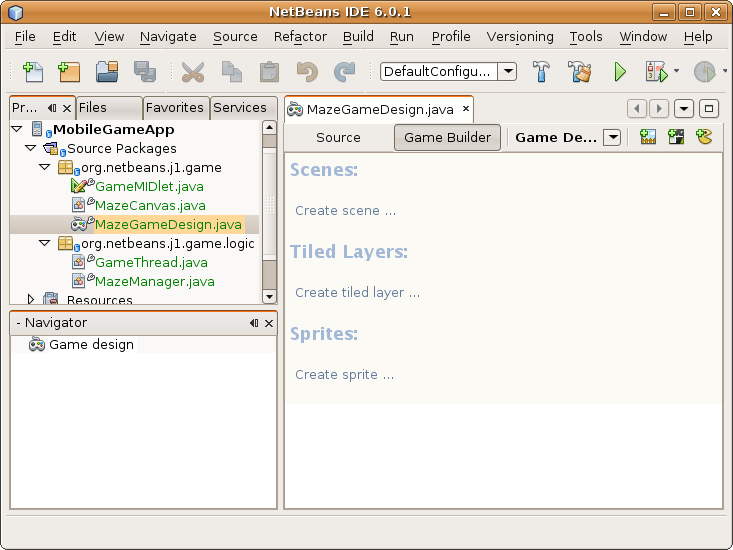
Figure-2-1: MazeGameDesign in the Game Builder
Sprites are the build brick of any MIDP game. Game Builder treats sprites as a collection of animated sequences where each sprite can be contain a number of sequences.
-
We will create new sprite. You can create it in following ways:
- Click Create Sprite text in the GameDesign file opened in editor. The Game Builder view has to be active.
- Click Create Sprite icon in toolbar of the GameDesign file opened in editor.
Use the /duke.png image. Adjust the tile size to 25 pixels with the sliders for both - width and height.
Name the Sprite as dukeS. Click Finish button.
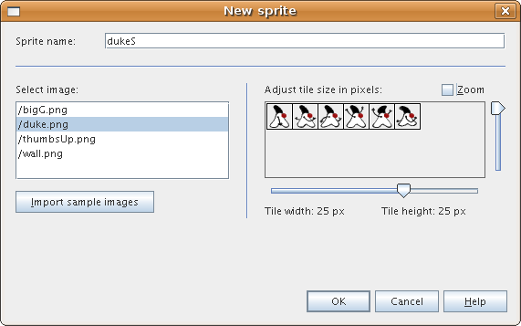
Figure-2-2: Create new sprite
New sprite with default sequence opens in the editor.
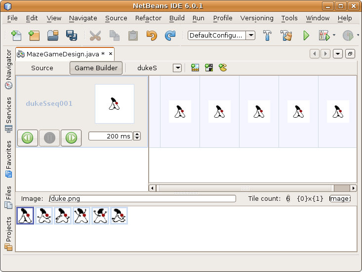
Figure-2-3: Default duke sprite sequence
-
Change the look of the sprite sequence to look like at Figure-2-4.
You can drag and drop images to desired position in the sprite sequence
from the down part of the Game Builder view where you can see all the available tiles for the sprite. When you right click a frame in the sequence you can remove the frame.
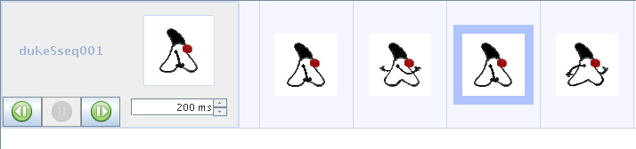
Figure-2-4: Duke sprite sequence
-
We need to create one more Sprite in our game in the same way as the previous one.
This time we will name the sprite jamesS. The image that we will use is bigG.
When the jamesS sprite is created it should look like on Figure-2-5.
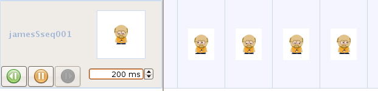
Figure-2-5: James Gosling sprite
-
We need more sequences for our duke sprite. The duke can walk, he can fall and also jump.
We have to create new sequences. Open the dukeS sprite in the Game Builder. Right click on any
frame of the default sequence - dukeSseq001.
- Choose Create sequence from the popup menu.
Name the sequence dukeSfalling. Create one more sequence with name
dukeSjumping.
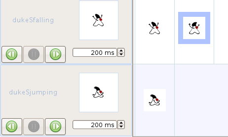
Figure-2-6: Sequences
TiledLayer are the build brick of any MIDP game. When a new tiled layer is created it can be edited in the
visual editor. This allows the user to modify the contents of the tiled layer and receive instant visual feedback.
The tiled layer editor also includes support for animated tiles.
-
Create new TiledLayer. You can invoke the New TiledLayer dialog in different way.
Name the TiledLayer as maze1. Use image wall. Adjust the tile size to the maximum heigth and width.
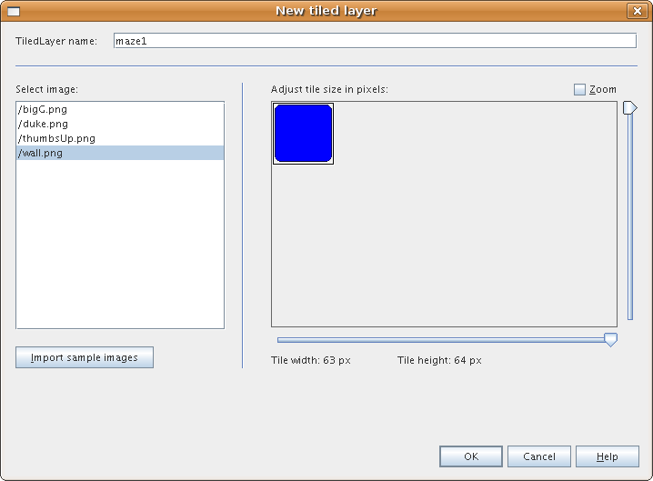
Figure-2-7: New tiled layer
-
Press Finish button. Empty grid appears.
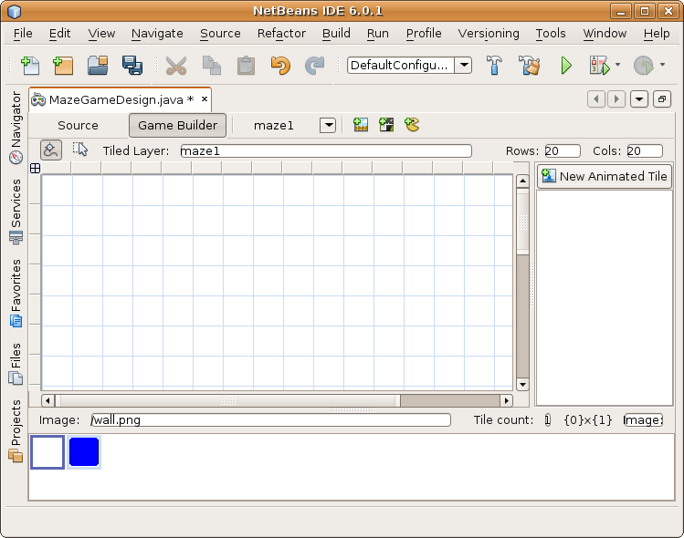
Figure-2-8: Empty tiled layer
-
You can create the tiled layer by drag and drop of images
from bottom area to the grid. The IDE will construct the tiled layer table for you.
Create a maze of square shape. Build up the walls of the maze. The maze should be square shape.
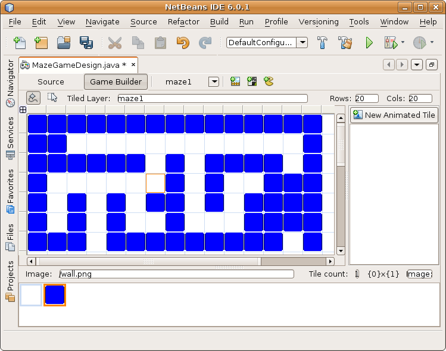
Figure-2-9: Example of maze walls
The scene editor is provided to organize all layers (sprites and tiled layers) together into scenes.
-
Create new Scene.
Name the Scene as level1. Click Finish button.
Empty scene grid appears.
-
Right click the grid. Choose Add tiled layer > maze1 from the popup menu.
The maze1 appears on the grid.
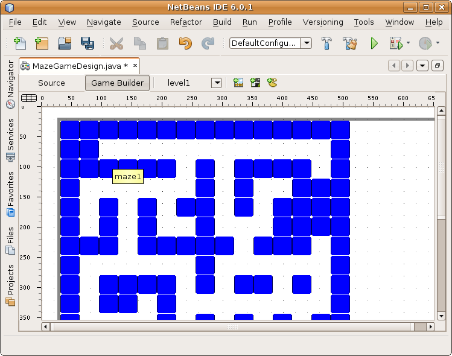
Figure-2-10: Maze1 on the scene grid
-
The maze1 tiled layer appears on grid in positions where you right clicked the mouse.
We need it in 0,0 position. You can either move it the with mouse
or you can set position in Navigator view in right bottom corner of IDE.
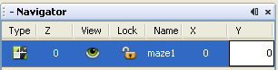
Figure-2-11: Setup of position
-
Right click the grid again. Choose Add sprite > jamesS from the popup menu.
Add dukeS sprite into the scene too.
Place both the sprites to not collide with the maze walls.
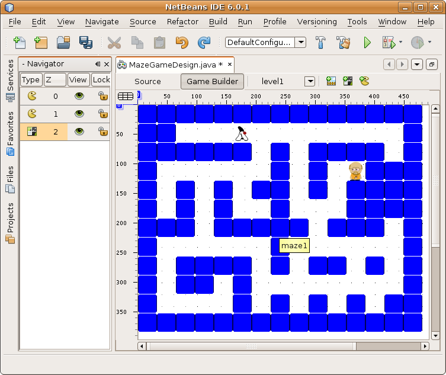
Figure-2-12: Final look of the scene
When placing the sprites of duke and James into the maze remember the purpose of the game -
duke is looking for James.
:
In this exercise you learned how to create new sprite, tiled layer.
Please, note that you can design these sprites and tiled layers in visual tool.
The sprites and tiled layer are defined by arrays of positions of a tile in the png image of the sprite.
NetBeans Mobility generates these boring arrays for you. If you want to see the generated source code
switch to Source of the MazeGameDesign.
You also learned how to create sequences of sprite and how to compose the sprites and tiled layers into a scene with NetBeans Mobility.
Go on to next exercise